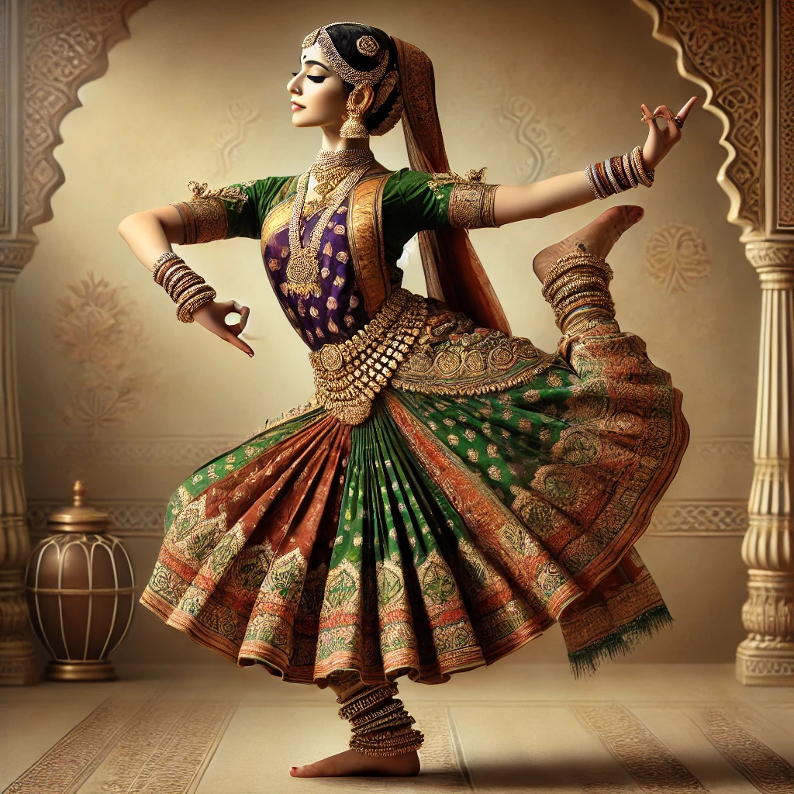

Kathak

Kathak a classical dance form from North India, known for its intricate footwork, mesmerizing spins, and expressive storytelling. Rooted in mythology and tradition, Kathak blends rhythm and narrative to create an art form that feels both ancient and timeless.
What It Feels Like: Dancing Kathak feels like stepping into a world where your body becomes a canvas for emotions and stories. The sound of the ghungroos (ankle bells) feels like music coming from within you, making every movement poetic.
Why It’s Unique: Kathak is not just about steps; it’s about storytelling. It allows you to express emotions you might struggle to put into words. The discipline of perfecting its movements teaches patience, while its gracefulness inspires creativity. It’s like embodying a graceful storyteller from a by gone era.
Relatable Perspective: Imagine being shy about showing your emotions. Kathak is like therapy in motion, breaking those walls. It’s for anyone who wants to connect with Indian culture, feel elegant, or simply embrace the art of expression.